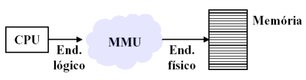
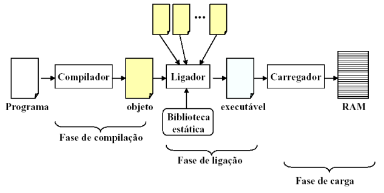
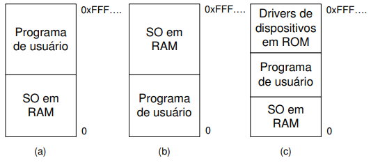
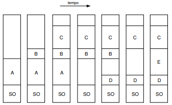
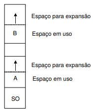
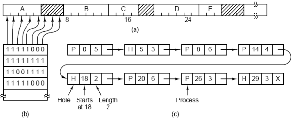

◉ Gerência de Memória
Como sabemos, os computadores utilizam uma hierarquia de memória em sua organização,
combinando memórias voláteis e não-voláteis, tais como: memória cache, memória principal e
memória secundária. Ao sistema operacional é destinada a função de coordenar e gerenciar a
utilização dessas memórias de forma eficiente. Este serviço é implementado pelo sistema
operacional através do gerenciador de memória.
O gerenciador de memória controla quais partes da memória estão sendo utilizadas e quais não
estão. Além disso, ele é responsável por alocar espaço em memória aos processos que serão
executados e liberar as posições de memória ocupadas quando os processos são finalizados. Uma
outra funcionalidade do gerenciador de memória é controlar o swapping de informação, constante
na execução das aplicações. Para iniciar a discussão sobre o tema da aula vamos entender,
primeiramente, a função da MMU.
◉ Unidade de Gerência de Memória (Memory Management Unit (MMU))
A MMU é um módulo de hardware que faz o mapeamento entre os endereços lógicos (end. da
memória virtual) e os endereços físicos da memória (RAM), ou seja, é um dispositivo que
transforma endereços virtuais em endereços físicos. Para isso, a MMU normalmente traduz
número de páginas virtuais para número de páginas físicas utilizando uma cache chamada
Translation Lookaside Buffer (TLB). Na figura abaixo temos ilustrado o mecanismo de tradução
dos endereços.

Em geral, os programas precisam ser compilados para que possam ser executados no sistema
computacional. Várias atividades ocorrem entre o instante em que o mesmo é compilado e o
momento em que ele inicia sua execução: geração do código objeto, código executável, alocação
em memória, nova entrada no PCB, inserção da referência do processo na fila de apto, etc. O
mecanismo tradicional de transformação de programas em processos é ilustrado abaixo:

◉ Gerenciamento Básico de Memória
Podemos classificar os gerenciadores de memória em dois tipos: os que permitem as trocas de
processos entre a memória principal e o disco (troca de processos e paginação, mais complexos) e
os que não permitem (muito mais simplificados e limitados). A necessidade da troca de processos
e paginação acontece devido a quantidade insuficiente de memória principal para armazenar vários
programas ao mesmo tempo. Hoje em dia, as máquinas adotam um modelo denominado
multiprogramação e, portanto, os algoritmos necessitam gerenciar várias aplicações que concorrem
ao uso das unidades de processamento e armazenamento de dados.
◉ Monoprogramação sem Troca de Processos ou Paginação
Este é o esquema mais simples de gerenciamento de memória. Neste caso a memória é
compartilhada entre o sistema operacional e o programa usuário. É importante observar que a
monoprogramação indica que somente um programa usuário é carregado na memória e executado
por vez. Algumas formas de organizar a memória com um sistema operacional e um processo de
usuário são mostradas na Figura.
O modelo apresentado em (a) foi utilizado em computadores de grande porte mas não é mais
empregado. Já a segunda organização (b) ainda é utilizada em alguns palmtops e em sistemas
embarcados. A estratégia ilustrada em (c) esteve presente nos primeiros computadores pessoais,
onde a parte do sistema operacional contida em ROM é denominada BIOS (Basic Input Output
System)

Pelo fato de permitir que apenas um único programa usuário seja carregado em memória a cada
instante, a monoprogramação raramente é usada hoje em dia, a não ser em sistemas embarcados
simples.
◉ Multiprogramação com Partições Fixas
Os sistemas operacionais modernos permitem que mais de um processo seja carregado em
memória, de modo que quando um fica bloqueado esperando por uma operação de E/S outro, que
esteja carregado em memória, poderá usar a CPU. Dessa forma, a multiprogramação ajuda a
melhorar a utilização da CPU evitando desperdícios de ciclo de processamento.
Para que seja possível a multiprogramação, podemos dividir a memória em n partições
(provavelmente de tamanhos diferentes). Os jobs serão colocados em filas de entrada associadas à
menor partição capaz de armazená-lo. Pelo fato de usarmos partições de tamanho fixo, todo o
restante de espaço de memória não utilizado pelo job será perdido. Este desperdício de memória é
chamado de fragmentação interna (espaço de memória perdido dentro da área alocada ao
processo). Por outro lado, imagine que exista duas partições livres, uma de 25 e outra de 100
Kbytes, não contíguas. Nesse instante é criado um processo de 110 Kbytes que não poderá ser
carregado em memória pela forma como ela é gerenciada. Este problema ocasiona o que
chamamos de fragmentação externa (memória perdida fora da área ocupada por um processo). A
Figura ilustra o esquema de organização com partições fixas.
O problema da organização em múltiplas filas é que jobs pequenos podem precisar esperar pela
liberação de memória (partição mais adequada para o mesmo), embora exista memória disponível
(partição grande), como é o caso da partição 1 e 3. Por outro lado, isso não ocorre no esquema de
uma única fila. Nesta organização (b) sempre que uma nova partição é liberada o job mais próximo
do início da fila e que caiba nessa partição pode ser carregado nela para ser executado pela CPU.
No entanto, esta estratégia pode desperdiçar muito espaço ao armazenar um job pequeno em uma
partição grande. Assim, uma opção mais interessante seria pesquisar em toda a fila de entrada e
alocar a partição disponível ao maior job que pudesse ser carregado. Qual o problema dessa
solução? (Discriminar jobs pequenos!) Qual a solução? (Ter pelo menos uma partição pequena!).
Existe uma outra possibilidade consiste em estabelecer uma quantidade máxima k de vezes que um
job pudesse ser excluído da escolha de receber uma partição. Assim, sempre que ele fosse
preterido teria seu contador incrementado e, ao chegar em k vezes, ele teria que receber uma
partição.

◉ Multiprogramação com Partições Variáveis
Neste esquema de organização a quantidade e o tamanho dos processos na memória podem variar
dinamicamente com o passar do tempo, o tamanho das partições é ajustado dinamicamente às
necessidades exatas dos processos. A Figura ilustra o funcionamento deste algoritmo,
considerando a ocorrência de swapping (trazer um processo do disco para a memória [swap in]
executá-lo durante um intervalo de tempo e depois devolvê-lo ao disco [swap out]). Inicialmente,
só o processo A está alocado na memória e com o passar do tempo os processos B, C, D e E
também são carregados. Diferentemente do esquema de partição fixa, na multiprogramação com
partições variáveis a o tamanho e a localização dos processos variam a medida que o mesmo deixa
e retorna à memória. Uma das grandes vantagens desta estratégia é que a flexibilidade obtida
melhora bastante a utilização da memória, evitando desperdícios de espaço. Por outro lado, a
gerência dos espaços vazios é mais complicada, bem como a alocação e liberação das partições. O
sistema operacional mantém uma lista de espaços livres na memória física. Sempre que um novo
processo é criado esta lista é percorrida e será usada uma lacuna maior ou igual ao tamanho do
processo em questão. O espaço que ultrapassar o tamanho do processo pode dar origem a uma
nova partição. Existem algumas formas de percorrer esta lista:
1. first-fit: inicia a procura a partir da primeira página de memória (parte baixa) e vai
varrendo a memória até encontrar a primeira lacuna suficientemente grande para armazenar
o processo.
2. best-fit: varre toda a memória e escolhe a página mais ajustada ao tamanho do processo.
3. worst-fit: varre toda a memória e escolhe a página menos ajustada ao tamanho do processo.
4. next-fit: segue a mesma idéia do first-fit, mas somente a primeira busca é iniciada na parte
baixa da memória (primeira página), as outras iniciam onde terminou a última. Usa-se uma
lista circular para permitir que, eventualmente, toda a memória seja percorrida.
Existe a possibilidade de formar buracos por toda a memória ao longo da execução dos processos,
o que não é desejável. Uma das formas de eliminar tais buracos é mover todos os processos para a
parte mais baixa da memória. Tal técnica é conhecida como compactação de memória. No entanto,
perde-se muito tempo de processamento para promover esta organização (desvantagem), logo não
é adequado realizar esta tarefa constantemente.
Algumas linguagens de programação permitem que a área de dados alocados por um processo
cresça ao longo de sua execução. Com isso, ocorrerão alguns problemas sempre que um processo
necessita crescer e sua partição não permite nenhuma expansão. Se houver algum espaço adjacente
ao processo que puder ser alocado a ele, o crescimento será permitido sem que seja necessário
mover o mesmo para outra partição maior. Caso não haja espaço para aumentar o
tamanho da partição ou não tenha uma partição grande o suficiente para realocar o processo, então
um ou mais processos deverão ser removidos para o disco (swapping). Se não for possível realizar
o swapping (área de swapping cheia) o processo que deseja crescer deverá esperar ou ser
eliminado.


◉ Gerência de Memória com Mapeamento de Bits
Basicamente, existem dois modos de gerenciar o uso da memória: com mapa de bits ou com uma
lista encadeada indicando os espaços ocupados e os disponíveis. No primeiro modo, a cada
unidade de alocação da memória é atribuido um bit para dizer se a posição está livre ou ocupada.
Assim, o conjunto de todos os bits é representado em uma tabela, denominada mapa de bits, que
mapeia todas as posições de memória dizendo o estado de cada uma. Devemos ressaltar que o
tamanho da unidade de alocação é muito importante e quanto menor as unidades, maior será o
mapa de bits. Como o mapa de bits também é armazenado em memória seu tamanho ocupará
espaço útil e, consequentemente, uma parte da memória será desperdiçada.
Quando um processo de k bits necessitar ser armazenado em memória a MMU deverá procurar no
mapa k bits consecutivos indicando que a posição está vazia (pode ser o bit 0 ou 1). Como varrer o
mapa de bits é lento este método quase não é usado.

A figura representa os espaços de memória com mapa de bits e lista ligada. (a) 5 segmentos
alocados a processos e três livres. (b) mapa de bits. (c) lista ligada.
◉ Gerência de Memória com Lista Ligada
As representações dos espaços livres e ocupados são feitos através de uma lista ligada, onde P
indica uma região ocupada por um processo e H um espaço livre de memória.
A lista pode estar ordenada por endereços de memória, conforme ilustrado na figura acima. Assim
como no mapa de bits, qualquer alteração nas posições de memória deve gerar uma alteração no
mapeamento promovido pela lista ligada. Se a lista estiver ordenada por endereço uma atualização
mais rápida é permitida sempre que um processo terminar de executar suas instruções ou for
retirado da memória. A utilização de uma lista duplamente encadeada facilita no processo de
atualização da mesma.
Existem alguns algoritmos que podem ser utilizados para alocar as informações na memória:
1. algoritmo da primeira alocação (first fit): procura-se pelo primeiro espaço na lista o
suficientemente grande para armazenar o processo. É um algoritmo rápido pois ele gasta o
tempo mínimo em procura. Se o processo não ocupa todo o espaço o restante é
disponibilizado como buraco na lista. A pesquisa por espaço sempre inicia na parte baixa
de memória, independentemente dos locais escolhidos para alocar os dados.
2. algoritmo da melhor alocação (best fit): busca em toda a lista o espaço cujo o tamanho seja
o mais próximo possível do tamanho do processo. Este algoritmo é mais lento que o
anterior pois precisa pesquisar em toda a lista para descobrir qual a melhor opção.
3. algoritmo da próxima alocação (next fit): semelhante ao first-fit, só que a próxima
alocação inicia com uma busta a partir da página onde terminou a alocação anterior e não
da parte baixa da memória.
4. algoritmo da pior alocação (worst fit): procura pelo maior espaço capaz de armazenar o
processo, de tal forma que o espaço restante seja grande o suficiente para armazenar outro
processo.